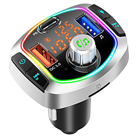
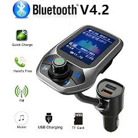
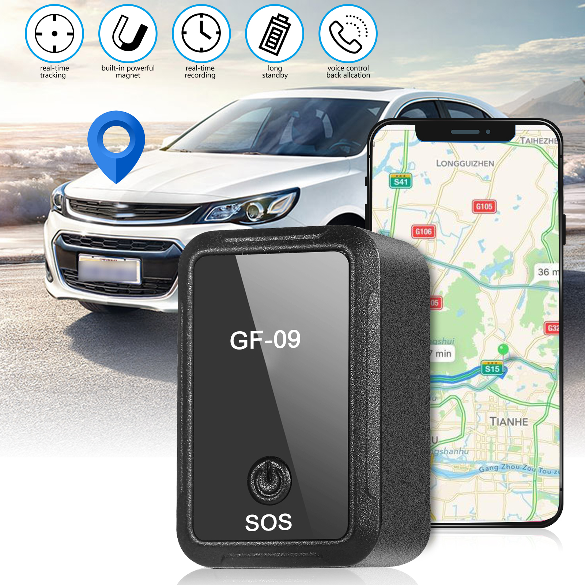
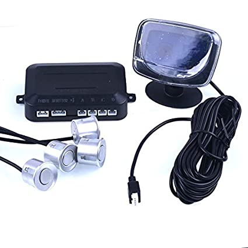
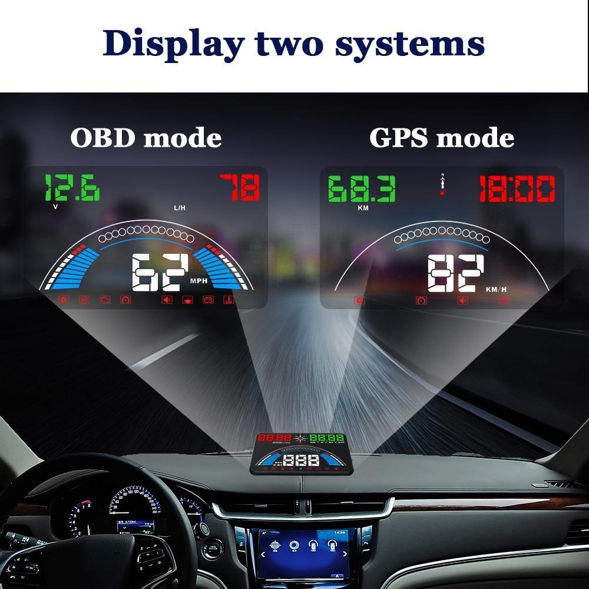
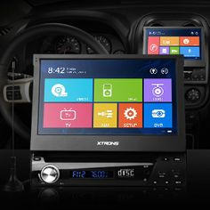

Electronics Gadgets

This is one of the USB and also used as mobile charger this can be very easy to use by anyone .

It is the bluetoooth device which is even more superior comapre to the previous gadget

This is the GPS gadget where we can find the direction and also plus we can even find the car if it is missing

This is the sensors which can be used to detect the object surrounded by the vechile.

This gadget is mainly used for the sport type car where it shows the vehicle speed and also Rpm and also displays GPS mode.

It is the smart screen where we can access Bluetooth,GPS and also it will be coonected to the sensors.